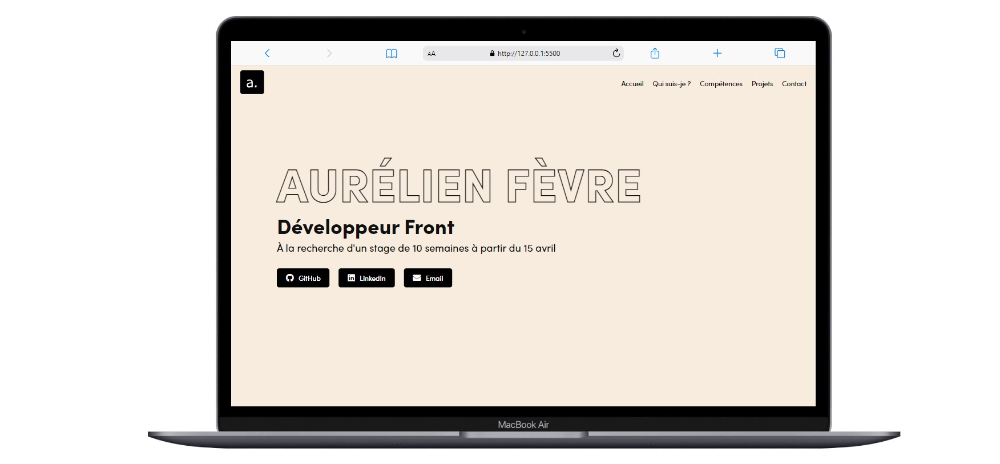
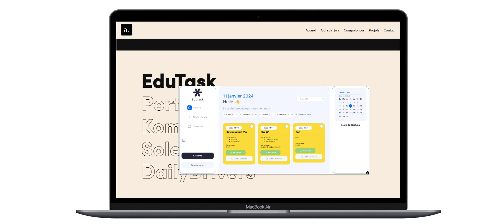

Portfolio
Mon portfolio, une représentation personnelle de mes compétences et projets, a été conçu et développé entièrement par mes soins. L'objectif était de créer un espace numérique captivant et informatif pour présenter mon travail et mes expériences.
Le site a été construit avec une combinaison d'HTML, CSS et JavaScript, mettant en pratique mes compétences en matière de développement front-end. J'ai également utilisé la bibliothèque GSAP (GreenSock Animation Platform) pour ajouter des animations fluides et interactives, améliorant ainsi l'expérience utilisateur et l'engagement visuel.
Chaque section du portfolio a été soigneusement conçue pour présenter différents aspects de mon travail, allant de projets individuels à des collaborations en équipe. Le design responsive assure une excellente accessibilité et une expérience utilisateur optimale sur divers appareils, des ordinateurs de bureau aux appareils mobiles.
Ce projet a été un excellent moyen de démontrer mes compétences en développement web et de design interactif. Il a nécessité environ 30 heures de travail, mettant en lumière non seulement mes compétences techniques mais aussi ma capacité à gérer un projet complet de sa conception à sa réalisation.
Temps passé sur le projet : 30 heures


Voici un bout de code démontrant l'animation d'entrée des éléments textuels sur mon portfolio. Ce code utilise la bibliothèque GSAP pour créer des animations fluides et attrayantes, captant immédiatement l'attention de l'utilisateur. L'animation donne vie au texte, le faisant entrer élégamment sur la page, ce qui ajoute une dimension interactive et dynamique au portfolio.
window.addEventListener('DOMContentLoaded', (event) => {
gsap.from('.title', { duration: 0.6, x: -100, opacity: 0, ease: 'power3.out' });
gsap.from('.role', { duration: 0.6, x: 100, opacity: 0, ease: 'power3.out', delay: 0.2 });
gsap.from('.stage-availability', { duration: 0.6, y: 100, opacity: 0, ease: 'power3.out', delay: 0.4 });
gsap.from('.social-links a', { duration: 0.6, y: 100, opacity: 0, stagger: 0.2, ease: 'power3.out', delay: 0.6 });
});